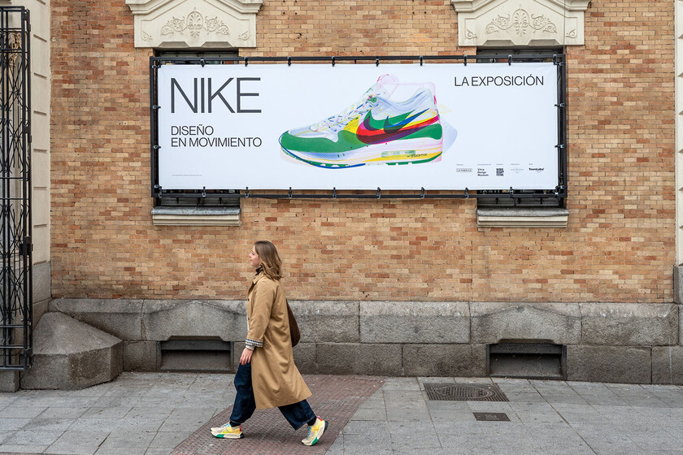
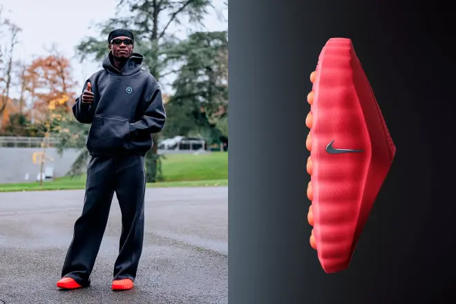
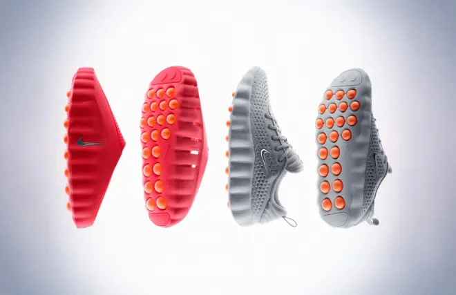

Las Air Jordan perfectas para llevar con todo, ahora en el outlet de Nike en liquidación a mitad de precio.
El modelo más vendido de la temporada
16 Noviembre 2025
Hay zapatillas que ya son auténticos iconos de diseño, como es el caso de las Air Jordan, da igual que hablemos de las de caña baja o alta. Tener un par en el armario nos asegura mil y un outfits con estilo, y sin duda estas Air Jordan 1 Low en color blanco y verde no son una excepción. Que ahora podemos encontrar en el outlet de la tienda oficial de la marca con un 50% de descuento por 64,99 euros (en lugar de 129,99 euros).
Estas zapatillas Air Jordan 1 Low son muy versátiles y fáciles de combinar, gracias a su diseño clásico de estilo retro, propio de las deportivas universitarias pero actualizado en una gama de colores perfectos para combinar con tus prendas marrón chocolate. Con un upper que combina la piel genuina con la piel sintética para que resulten tan duraderas como elegantes, estas zapatillas son las clásicas que querrás llevar con todo: desde con traje para vestir elegante en el trabajo hasta con tus vaqueros favoritos cuando quedes para pasar la tarde con tus amigas.
.avif)
.avif)

Llega a Madrid la exposición 'NIKE. Diseño en movimiento': la cita obligada para los amantes de las zapatillas y la cultura pop
Nike desembarca con una expo para los sneakerheads
18 Noviembre 2025
Cuando unas zapatillas pueden contar su propia película de acción, es que algo está moviéndose, y no precisamente en una cinta de Nike World. Eso es justo lo que pasa con la exposición "NIKE. Diseño en movimiento", que aterriza en Madrid para dejar sin aliento y con ganas de estrenar unas zapatillas míticas, a los más acérrimos sneakerheads.
La exposición abre sus puertas el 12 de noviembre de 2025 en el espacio TeamLabs/ de Madrid (Plaza de San Martín, 1) y se podrá visitar hasta el 25 de enero de 2026. Se trata de la primera gran muestra dedicada a la marca deportiva desde un punto de vista de diseño, tecnología y cultura, organizada por La Fábrica. En su recorrido, la exposición despliega más de 175 piezas procedentes del Department of Nike Archives en Oregón: bocetos, prototipos de zapatillas legendarias como las Air Jordan o las Waffle Trainer, máquinas que han medido el movimiento de los atletas, e incluso prendas personales de figuras como Rafa Nadal, Pau Gasol o Serena Williams
Las zapatillas de Camavinga que prometen un salto mental en el fútbol.
El modelo Mind 001, que usan Haaland y Rashford
19 Noviembre 2025
El fútbol de élite está acostumbrado a que la innovación le llegue por los pies, pero rara vez con un discurso tan directo hacia la mente. En Clairefontaine, Eduardo Camavinga apareció hace días con un calzado rojo de formas futuristas que levantó todas las miradas.
No eran unas zapatillas de descanso ni un capricho modístico. Eran las Nike Mind 001, el nuevo experimento tecnológico de la marca estadounidense, que saldrá a la venta próximamente por 84,99 euros. Pocas horas después de pisar la concentración con la selección francesa, el centrocampista volvió a Madrid por unas molestias, pero la imagen ya había saltado a los ojos de millones de aficionados intrigados. Sin embargo, no fue la selección francesa la primera que se fijó en ellas, sino Inglaterra. En la concentración del combinado de Thomas Tuchel, la Federación ha repartido oficialmente las Nike Mind como parte del equipamiento obligatorio de la ventana internacional. No se trata de un accesorio estético, al menos no en el discurso. Se presentan como zapatillas con base en la “neurociencia” , diseñadas para favorecer la calma, la concentración y la sensación de presencia durante las reuniones técnicas o los momentos previos a entrenar.
